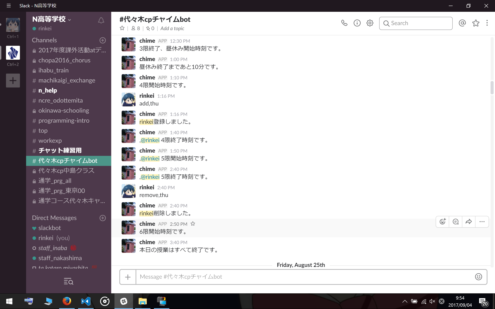

代々木CPチャイムbot使用方法
代々木キャンパスの授業時間に合わせメッセージを送信します。
以下のコマンドによりリプライにすることができます。
add,hoge
リプライリストへ登録します。
hogeに以下の曜日コマンドを入れることで曜日ごとの登録、weekを入れることで月～金へまとめて登録が可能です。
remove,hoge
リプライリストから削除します。
hogeに下記の曜日コマンドを入れることで曜日ごとの削除、allを入れることで全ての曜日の削除が可能です。同じ曜日に重複して登録されていた場合一つしか削除できないため何度かこのコマンドを送信してください。
check
登録状況を確認できます。
曜日コマンド一覧
"sun","mon","tue","wed","thu","fri","sat"
何か問題があれば@rinkeiまで連絡をお願いします。
